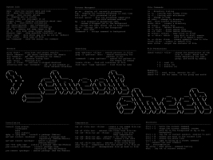
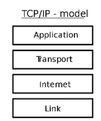
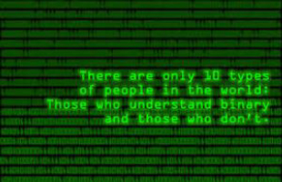
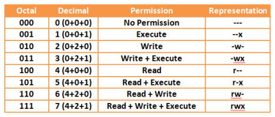
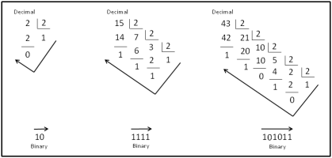

On-Site Workshop: June 14
Module Introduction
Linux Introduction
Preparatory Lab
Shell Scripting
Vagrant and Sense HAT
Week 1
Linux and Shell Scripting
Ubuntu For Beginners
Using Linux
Commands Cheatsheet
Linux Practice Exercises
Introduction to Computing
Introduction to Networks
Home Network
Week 2
Shell Scripting
The Shell
Text Manipulation
Assessment Details
Scripting Exercises
Virtualisation
Introduction to Virtualisation
Virtualisation Advantages
Virtualisation Challenges
Hardware Virtualisation
Connecting to a VM
Introduction to Vagrant
Vagrant and Virtualisation
Week 3
Computer History & Architecture
From Abacus to iPhone
Definable Generations of Computing
Computer Architecture
CPU
TCP/IP Protocol Stack
TCP/IP Protocol Stack & Data Link
Packet Sniffing using TShark
Week 4
Computer Number Bases
Binary Number Representation
Hexadecimal Number Representation
Octal Number Representation
Signed Number Representation
Labs
Networking
IP Address Format
IP Conversion
IP Subnet Mask
Assigning IP Addresses
IP Networking
Week 5
Gates and Circuits
Logic Gates Representation
Boolean Algebra
Combinational Circuits
Transistors and Integrated Circuits
Labs
Week 6
Logic Gates and Circuits
Karnaugh Map Gate Simplification
Circuits
Labs
Introduction to Raspberry Pi
The Headless RPi
Computer Systems and Networks
All slides's in Module
Module Introduction
Linux Introduction
Ubuntu For Beginners
Using Linux
Commands Cheatsheet

Introduction to Networks
The Shell
Text Manipulation
Assessment Details
Introduction to Virtualisation
Virtualisation Advantages
Virtualisation Challenges
Hardware Virtualisation
Connecting to a VM
Introduction to Vagrant
From Abacus to iPhone
Definable Generations of Computing
Computer Architecture
TCP/IP Protocol Stack & Data Link

Binary Number Representation

Hexadecimal Number Representation
Octal Number Representation

Signed Number Representation
IP Address Format
IP Conversion

IP Subnet Mask
Assigning IP Addresses
Logic Gates Representation
Boolean Algebra
Combinational Circuits
Transistors and Integrated Circuits
Karnaugh Map Gate Simplification
Circuits
Introduction to Raspberry Pi